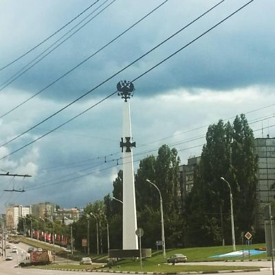
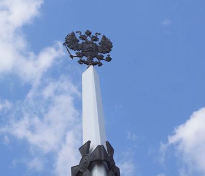

Памятник героям Первой мировой войны (Липецк)
Памятник героям Первой мировой войны — памятник, установленный в городе Липецке в год столетия с момента начала Первой мировой войны, посвящённый памяти русских солдат и офицеров, павших в боях этой войны.
О памятнике
Памятник был создан по инициативе Российского военно-исторического общества и Администрации Липецкой области. Его автором стал народный художник Российской Федерации Александр Иулианович Рукавишников. Торжественное открытие памятника состоялось 8 августа 2014 года на перекрёстке улиц Циолковского и Терешковой в Липецке. В открытии приняли участие руководитель департамента военно-исторического наследия Российского военно-исторического общества Алексей Лебедев, заместитель министра культуры Российской Федерации Алла Манилова и глава администрации Липецкой области Олег Королёв.
Изображения:


Памятник героям Первой мировой войны на карте:
|